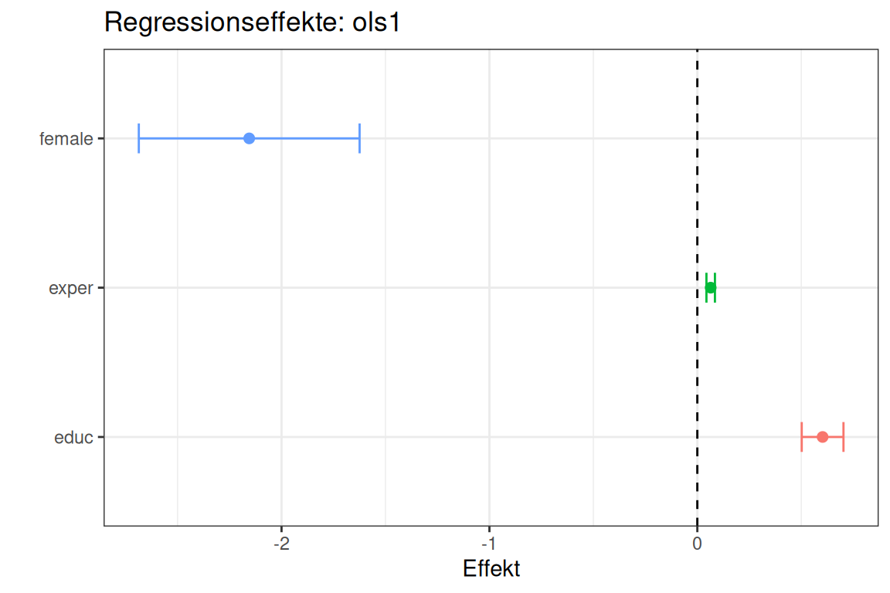

8 Regressionen
In diesem Kapitel lernen wir, wie man Regressionsmodelle in R berechnet. Wie in Kapitel 7 greifen wir auf den wage1-Datensatz aus dem Package wooldridge zurück:
Für Fixed-Effects-Modelle in ?sec-fe-modelle verwenden wir außerdem den Datensatz wagepan aus dem selben Package, da hierfür Paneldaten benötigt werden:
wagepan <- wagepan |>
as_tibble() |>
select(nr, year, lwage, educ, exper, married)
glimpse(wagepan)
#> Rows: 4,360
#> Columns: 6
#> $ nr <int> 13, 13, 13, 13, 13, 13, 13, 13, 17, 17, 17, 17, 17, 17, 17,…
#> $ year <int> 1980, 1981, 1982, 1983, 1984, 1985, 1986, 1987, 1980, 1981,…
#> $ lwage <dbl> 1.1975402, 1.8530600, 1.3444617, 1.4332134, 1.5681251, 1.69…
#> $ educ <int> 14, 14, 14, 14, 14, 14, 14, 14, 13, 13, 13, 13, 13, 13, 13,…
#> $ exper <int> 1, 2, 3, 4, 5, 6, 7, 8, 4, 5, 6, 7, 8, 9, 10, 11, 4, 5, 6, …
#> $ married <int> 0, 0, 0, 0, 0, 0, 0, 0, 0, 0, 0, 0, 0, 0, 0, 0, 1, 1, 1, 1,…Die wesentlichen Variablen sind der logarithmierte Stundenlohn (lwage), Bildungsjahre (educ), Berufserfahrung (exper) in Jahren sowie einen binären Indikator für Familienstand (married)). Da wir hier eine Gruppe von Personen über mehrere Jahre hinweg beobachten haben wir außerdem noch einen Indikator für die Personen-ID (nr) sowie das Beobachtungsjahr (year).
8.1 OLS-Regressionsmodell
8.1.1 OLS-Basics
Lineare Regressionsmodelle (OLS) werden in R mit der Funktion lm() geschätzt. Der Syntax folgt der Formelschreibweise y ~ x1 + x2 + ..., wobei y die abhängige Variable und x1, x2, ... die unabhängigen Variablen sind. Mit dem Argument data = ... wird der Datensatz angegeben.
In einem OLS-Modell können wir zum Beispiel den Stundenlohn durch Bildung, Erfahrung und Geschlecht erklären:
ols1 <- lm(wage ~ educ + exper + female, data = wage1)
summary(ols1)
#>
#> Call:
#> lm(formula = wage ~ educ + exper + female, data = wage1)
#>
#> Residuals:
#> Min 1Q Median 3Q Max
#> -6.3856 -1.9652 -0.4931 1.1199 14.8217
#>
#> Coefficients:
#> Estimate Std. Error t value Pr(>|t|)
#> (Intercept) -1.73448 0.75362 -2.302 0.0218 *
#> educ 0.60258 0.05112 11.788 < 2e-16 ***
#> exper 0.06424 0.01040 6.177 1.32e-09 ***
#> female -2.15552 0.27031 -7.974 9.74e-15 ***
#> ---
#> Signif. codes: 0 '***' 0.001 '**' 0.01 '*' 0.05 '.' 0.1 ' ' 1
#>
#> Residual standard error: 3.078 on 522 degrees of freedom
#> Multiple R-squared: 0.3093, Adjusted R-squared: 0.3053
#> F-statistic: 77.92 on 3 and 522 DF, p-value: < 2.2e-16lm() und andere Modellierungsfunktionen geben ein Modellobjekt zurück. Mit summary() können wir die wesentlichen Elemente zusammenfassen. Mit gezielten Extraktionsfunktionen lässt sich aber auf die einzelnen Bestandteile zugreifen:
Das Modellobjekt ist außerdem die Grundlage für weiterführende Funktionen wie predict() (Vorhersagen für neue Daten) oder confint() (Konfidenzintervalle der Koeffizienten). Viele Packages wie broom oder modelsummary greifen ebenfalls auf dieses Objekt zurück, um Ergebnisse aufzubereiten.
Mehrere für die Inferenz relevante Parameter (Standardfehler, t-Statistik, p-Wert) werden jedoch nicht direkt im Modellobjekt abgespeichert, sondern von summary() berechnet. Um auf diese Parameter explizit zugreifen zu können, verwenden wir:
Um z.B. nur die Standardfehler zu extrahieren, müssen wir die relevante Spalte dieser Matrix ansprechen: coef(summary(ols1))[,"Std. Error"] oder coef(summary(ols1))[,2].
8.1.2 Tranformierte Variablen
Oft möchten wir in unseren Modellen mit transformierten Variablen arbeiten. BDiese Transformationen müssen wir nicht zwingend vor der Modellberechnung durchführen und als eigene Variablen abspeichern, sondern können diese auch direkt innerhalb der Regressionsfunktion angeben. Möchten wir unser Ausgangsmodell so adaptieren, dass wir als abhängige Variable den logarithmierten Stundenlohn verwenden und zusätzlich einen quadratischen Erfahrungseffekt als Prädiktor inkludieren:
ols2 <- lm(log(wage) ~ educ + exper + I(exper^2) + female, data = wage1)
summary(ols2)
#>
#> Call:
#> lm(formula = log(wage) ~ educ + exper + I(exper^2) + female,
#> data = wage1)
#>
#> Residuals:
#> Min 1Q Median 3Q Max
#> -1.80836 -0.27728 -0.01813 0.25637 1.23896
#>
#> Coefficients:
#> Estimate Std. Error t value Pr(>|t|)
#> (Intercept) 0.3904831 0.1022096 3.820 0.000149 ***
#> educ 0.0841361 0.0069568 12.094 < 2e-16 ***
#> exper 0.0389100 0.0048235 8.067 5.00e-15 ***
#> I(exper^2) -0.0006860 0.0001074 -6.389 3.71e-10 ***
#> female -0.3371868 0.0363214 -9.283 < 2e-16 ***
#> ---
#> Signif. codes: 0 '***' 0.001 '**' 0.01 '*' 0.05 '.' 0.1 ' ' 1
#>
#> Residual standard error: 0.4134 on 521 degrees of freedom
#> Multiple R-squared: 0.3996, Adjusted R-squared: 0.395
#> F-statistic: 86.69 on 4 and 521 DF, p-value: < 2.2e-168.1.3 Interaktionseffekte
Interaktionseffekte erlauben es, zu prüfen, ob der Effekt einer Variable von einer anderen Variable abhängt. In lm() werden Interaktionen mit dem *-Operator spezifiziert. a * b ist dabei eine Kurzform für a + b + a:b und schließt beide Haupteffekte sowie den Interaktionsterm automatisch ein:
ols3 <- lm(wage ~ educ * exper + female, data = wage1)
summary(ols3)
#>
#> Call:
#> lm(formula = wage ~ educ * exper + female, data = wage1)
#>
#> Residuals:
#> Min 1Q Median 3Q Max
#> -6.6786 -1.8886 -0.5291 1.1104 14.7342
#>
#> Coefficients:
#> Estimate Std. Error t value Pr(>|t|)
#> (Intercept) -0.489972 1.152289 -0.425 0.671
#> educ 0.504442 0.085672 5.888 7.01e-09 ***
#> exper 0.008438 0.040471 0.208 0.835
#> female -2.194000 0.271382 -8.085 4.39e-15 ***
#> educ:exper 0.004722 0.003310 1.427 0.154
#> ---
#> Signif. codes: 0 '***' 0.001 '**' 0.01 '*' 0.05 '.' 0.1 ' ' 1
#>
#> Residual standard error: 3.075 on 521 degrees of freedom
#> Multiple R-squared: 0.312, Adjusted R-squared: 0.3067
#> F-statistic: 59.06 on 4 and 521 DF, p-value: < 2.2e-16Auch Mehrfachinteraktionen können inkludiert werden, etwa eine Dreifachinteraktion mit a * b * c. Auch hier werden alle Haupteffekte sowie alle möglichen Interaktionen zwischen den einzelnen Variablen (in diesem Beispiel Zweifach- und Dreifachinteraktionen) automatisch eingeschlossen. In den seltenen Fällen, in denen man nur einen spezifischen Interaktionseffekt, aber keine anderen in das Modell aufnehmen möchte, kann man dies mit a:b anstelle von a * b spezifizieren.
Die Ergebnisse eines oder mehrere Regressionsmodelle lassen sich auch in Plots darstellen. Mehrere R-Packages wie etwa sjPlot (siehe Online-Dokumentation) bieten dafür fertige Funktionen. Die Visualisierung von Regressionsresultaten ist jedoch auch einfach in ggplot2 möglich. Dazu müssen wir uns die abzubildenden Effekte zuerst aus den Modellobjekten extrahieren. Möchten wir etwa die Effekte in unserem ersten OLS-Modell inklusive einem 95% Konfidenzintervall visualisieren:
plot.data <- tibble(
name = names(coef(ols1)),
coef = coef(ols1),
low95 = confint(ols1, level = 0.95)[,1],
high95 = confint(ols1, level = 0.95)[,2]
) |>
filter(name != "(Intercept)")
ggplot(
data = plot.data,
aes(y = name, color = name)
) +
geom_point(aes(x = coef), size = 2) +
geom_errorbarh(aes(xmin = low95, xmax = high95), width = .2) +
geom_vline(xintercept = 0, lty = 2) +
theme_bw() +
theme(legend.position = "none") +
labs(
title = "Regressionseffekte: ols1",
y = "",
x = "Effekt"
)
8.2 Logit- und Probit-Modelle
Das OLS-Regressionsmodell ist das gängigste Schätzverfahren bei der Regressionsanalyse. Abhängig von der Datenlage können jedoch auch (lineare) Regressionsmodelle angebracht sein. Ist die abhängige Variable etwa binär, so werden in den Wirtschaftswissenschaften auch häufig Logit- oder Probit-Modelle verwendet. Diese werden in R über die Funktion glm() (Generalized Linear Model) geschätzt. Mit dem Argument family = binomial(link = ...) wird das Modell spezifiziert:
logit <- glm(married ~ wage + educ + exper + female,
data = wage1,
family = binomial(link = "logit"))
summary(logit)
#>
#> Call:
#> glm(formula = married ~ wage + educ + exper + female, family = binomial(link = "logit"),
#> data = wage1)
#>
#> Coefficients:
#> Estimate Std. Error z value Pr(>|z|)
#> (Intercept) -1.937774 0.560845 -3.455 0.00055 ***
#> wage 0.090371 0.038689 2.336 0.01950 *
#> educ 0.093590 0.042565 2.199 0.02790 *
#> exper 0.059285 0.008757 6.770 1.29e-11 ***
#> female -0.472187 0.205032 -2.303 0.02128 *
#> ---
#> Signif. codes: 0 '***' 0.001 '**' 0.01 '*' 0.05 '.' 0.1 ' ' 1
#>
#> (Dispersion parameter for binomial family taken to be 1)
#>
#> Null deviance: 704.29 on 525 degrees of freedom
#> Residual deviance: 613.48 on 521 degrees of freedom
#> AIC: 623.48
#>
#> Number of Fisher Scoring iterations: 4
probit <- glm(married ~ wage + educ + exper + female,
data = wage1,
family = binomial(link = "probit"))
summary(probit)
#>
#> Call:
#> glm(formula = married ~ wage + educ + exper + female, family = binomial(link = "probit"),
#> data = wage1)
#>
#> Coefficients:
#> Estimate Std. Error z value Pr(>|z|)
#> (Intercept) -1.132838 0.333757 -3.394 0.000688 ***
#> wage 0.052593 0.021958 2.395 0.016613 *
#> educ 0.055671 0.025379 2.194 0.028268 *
#> exper 0.034478 0.005014 6.876 6.16e-12 ***
#> female -0.300126 0.123519 -2.430 0.015108 *
#> ---
#> Signif. codes: 0 '***' 0.001 '**' 0.01 '*' 0.05 '.' 0.1 ' ' 1
#>
#> (Dispersion parameter for binomial family taken to be 1)
#>
#> Null deviance: 704.29 on 525 degrees of freedom
#> Residual deviance: 615.07 on 521 degrees of freedom
#> AIC: 625.07
#>
#> Number of Fisher Scoring iterations: 4Die Koeffizienten eines Logit- oder Probit-Modells sind nicht direkt als Effekte auf die Wahrscheinlichkeit interpretierbar, sondern als Effekte auf den Log-Odds (Logit) bzw. den latenten Index (Probit). Für eine inhaltliche Interpretation werden daher oft durchschnittliche marginale Effekte (Average Marginal Effects, AME) berechnet. Das Package marginaleffects bietet hierfür eine passende Funktion:
library(marginaleffects)
avg_slopes(logit)8.3 Fixed-Effects-Modelle
Fixed-Effects-Modelle (FE) kontrollieren für alle zeitkonstanten, unbeobachteten Eigenschaften der Einheiten (Personen, Unternehmen, Länder) und werden typischerweise für Paneldaten verwendet. In R kann das FE-Modell mit dem Package fixest mit der Funktion feols() geschätzt werden:
library(fixest)
fe_mod <- feols(lwage ~ exper | nr,
data = wagepan)
summary(fe_mod)
#> OLS estimation, Dep. Var.: lwage
#> Observations: 4,360
#> Fixed-effects: nr: 545
#> Standard-errors: IID
#> Estimate Std. Error t value Pr(>|t|)
#> exper 0.063328 0.002345 27.0005 < 2.2e-16 ***
#> ---
#> Signif. codes: 0 '***' 0.001 '**' 0.01 '*' 0.05 '.' 0.1 ' ' 1
#> RMSE: 0.331889 Adj. R2: 0.556112
#> Within R2: 0.160472Der Ausdruck nach | in der Formel gibt die Fixed-Effects-Variablen an. fixest unterstützt mehrere Fixed Effects (z.B. | nr + year), geclusterte Standardfehler sowie eine Vielzahl weiterer Modellspezifikationen. Eine ausführliche Einführung findet sich in der fixest-Dokumentation.
8.4 Standardfehler
Die Standardfehler der Regressionskoeffizienten bestimmen, wie präzise unsere Schätzungen sind, und bilden die Grundlage für t-Statistiken, p-Werte und Konfidenzintervalle. lm() berechnet per Default klassische OLS-Standardfehler, die unter der Annahme homoskedastischer und unkorrelierter Fehlerterme effizient sind. In der empirischen Wirtschaftsforschung sind diese Annahmen jedoch häufig verletzt, weshalb robuste oder geclusterte Standardfehler verwendet werden.
Für die Berechnung alternativer Standardfehler müssen wir in R auf Packages zurückgreifen. Das in Kapitel 8.3 eingeführte Package fixest unterstützt robuste und geclusterte Standardfehler direkt in der Schätzfunktion, ohne zusätzliche Packages. Das Argument vcov = ... kann direkt in feols() oder nachträglich mit summary() gesetzt werden. Für robuste Standardfehler verwenden wir vcov = "hc3" (alternativ "hc1"/"hc2", abhängig vom gewünschten Standardfehlertyp):
feols(wage ~ educ + exper + female,
data = wage1,
vcov = "hc3")
#> OLS estimation, Dep. Var.: wage
#> Observations: 526
#> Standard-errors: HC3
#> Estimate Std. Error t value Pr(>|t|)
#> (Intercept) -1.734481 0.868647 -1.99676 4.6370e-02 *
#> educ 0.602580 0.065005 9.26970 < 2.2e-16 ***
#> exper 0.064242 0.010113 6.35214 4.6257e-10 ***
#> female -2.155517 0.260249 -8.28250 1.0203e-15 ***
#> ---
#> Signif. codes: 0 '***' 0.001 '**' 0.01 '*' 0.05 '.' 0.1 ' ' 1
#> RMSE: 3.06634 Adj. R2: 0.305334Geclusterte Standardfehler sind die Erweiterung robuster Standardfehler auf Situationen, in denen Beobachtungen innerhalb von Gruppen (Clustern) korreliert sind — etwa Personen innerhalb von Unternehmen, Schüler innerhalb von Schulen oder Beobachtungen innerhalb von Ländern. Klassische und HC-robuste Standardfehler unterschätzen in solchen Fällen die wahre Unsicherheit der Schätzungen.
Mit vcov = ~... oder cluster = ~... geben wir in feols() die Cluster-Variable an:
feols(lwage ~ exper | nr,
vcov = ~nr,
data = wagepan)
#> OLS estimation, Dep. Var.: lwage
#> Observations: 4,360
#> Fixed-effects: nr: 545
#> Standard-errors: Clustered (nr)
#> Estimate Std. Error t value Pr(>|t|)
#> exper 0.063328 0.00325 19.4871 < 2.2e-16 ***
#> ---
#> Signif. codes: 0 '***' 0.001 '**' 0.01 '*' 0.05 '.' 0.1 ' ' 1
#> RMSE: 0.331889 Adj. R2: 0.556112
#> Within R2: 0.160472Um die Standardfehler in Logit- oder Probit-Modellen zu adaptieren, können wir die Modelle mit der Funktion feglm() aus fixest schätzen und dabei die gewünschte Art der Standardfehlerberechnung spezifizieren. Alternativen zu Kalkulation von robusten oder geclusterten Standardfehler in Regressionsmodellen finden sich in den Packages sandwich und lmtest.
8.5 Kausalinferenz
Die hier behandelten Regressionsmodelle erlauben grundsätzlich nur die Schätzung von Zusammenhängen, nicht von kausalen Effekten. Die Kausalinferenz befasst sich mit der Frage, unter welchen Bedingungen und mit welchen Methoden aus Beobachtungsdaten dennoch kausale Schlüsse gezogen werden können. Dabei ist die Wahl des richtigen Forschungsdesigns von essenzieller Bedeutung.
Ein umfassender Überblick über moderne Kausalinferenz-Methoden und ihre Umsetzung in R findet sich in folgenden Lehrbüchern:
- Causal Inference: The Mixtape von Scott Cunningham (Link)
- The Effect von Nick Huntington-Klein (Link)
Für viele dieser Forschungsdesigns gibt es Packages zur Umsetzung in R. Ein Überblick über die relevanten R-Packages nach Methode findet sich auf CRAN.